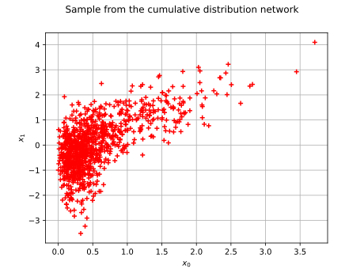
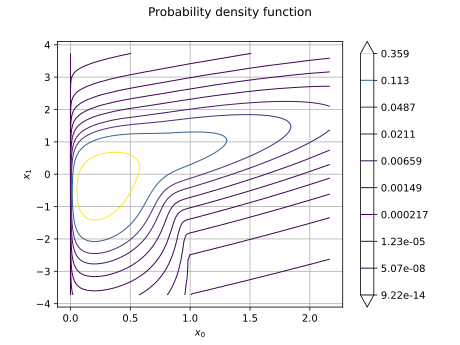
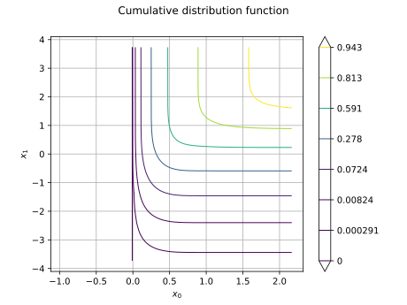
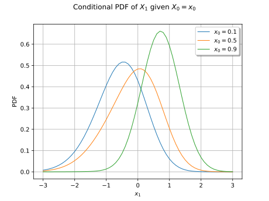
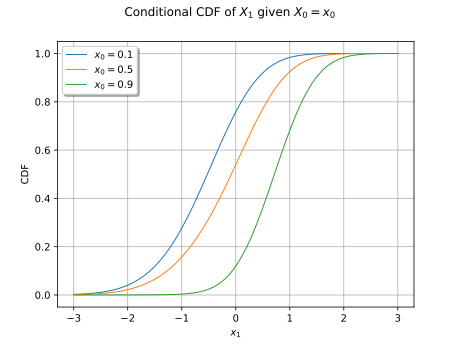
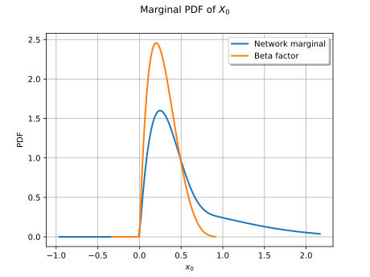

Note
Go to the end to download the full example code.
Cumulative distribution network¶
A CumulativeDistributionNetwork defines a multivariate
distribution from a bipartite graph between factors (the red nodes) and
variables (the black nodes).
Each factor is a distribution whose dimension is the number of variables it
is connected to.
The cumulative distribution function (CDF) of the network is the product of
the factor CDFs:
![F(\vect{x}) = \prod_{c=1}^{C} F_c\left(\vect{x}_c\right),]()
where ![\vect{x}_c]() is the vector of the variables connected to the
factor
is the vector of the variables connected to the
factor ![c]() .
When a variable belongs to several factors, the factors overlap and create
dependence.
In that case the probability density function (PDF) is the mixed derivative
of this product: it is not the product of the factor PDFs.
.
When a variable belongs to several factors, the factors overlap and create
dependence.
In that case the probability density function (PDF) is the mixed derivative
of this product: it is not the product of the factor PDFs.
In this example we build a two-dimensional network. The first factor is a Beta distribution on the first variable, the second factor is a bivariate Normal distribution on both variables. The graph is therefore made of two red nodes: the first one is connected to the first variable only, the second one is connected to both variables.
import openturns as ot
import openturns.viewer as otv
ot.RandomGenerator.SetSeed(12345)
correlation = ot.CorrelationMatrix(2)
correlation[1, 0] = 0.8
beta = ot.Beta(2.0, 5.0, 0.0, 1.0)
normal = ot.Normal([0.0, 0.0], [1.0, 1.0], correlation)
graph = ot.BipartiteGraph([[0], [0, 1]])
distribution = ot.CumulativeDistributionNetwork([beta, normal], graph)
The bipartite graph is drawn below: the red nodes are the factors, the black nodes are the variables, and each edge links a factor to one of its variables.
graph_view = graph.draw()
graph_view.setTitle("Bipartite graph of the network")
view = otv.View(graph_view)

The dimension of the network is the number of black nodes, while the dimension of its parameter is the sum of the dimensions of the factor parameters.
print("Dimension:", distribution.getDimension())
print("Parameter dimension:", distribution.getParameterDimension())
print("Graph:", graph)
Dimension: 2
Parameter dimension: 9
Graph: [[0],[0,1]]
The range of the network is the coordinate-wise maximum of the factor ranges. The first variable is not restricted to the support of the Beta factor: it is only bounded from below, because the Normal factor is unbounded.
print("Range:", distribution.getRange())
Range: [0, (7.65063) +inf[
]-inf (-7.65063), (7.65063) +inf[
We evaluate the PDF and the CDF at a given point.
point = [0.3, 0.5]
print("PDF at", point, "=", distribution.computePDF(point))
print("CDF at", point, "=", distribution.computeCDF(point))
PDF at [0.3, 0.5] = 0.46389664633612937
CDF at [0.3, 0.5] = 0.32238992556520996
We now draw a sample of size 1000. As in the other distribution examples, the sample is represented by a red cloud.
sample = distribution.getSample(1000)
graph_sample = ot.Graph(
"Sample from the cumulative distribution network",
"$x_0$",
"$x_1$",
True,
"",
)
cloud = ot.Cloud(sample)
cloud.setColor("red")
graph_sample.add(cloud)
view = otv.View(graph_sample)

The PDF is obtained from the exact mixed derivative of the product of the factor CDFs.
graph_pdf = distribution.drawPDF()
graph_pdf.setTitle("Probability density function")
graph_pdf.setXTitle("$x_0$")
graph_pdf.setYTitle("$x_1$")
view = otv.View(graph_pdf)

The CDF is the product of the factor CDFs.
graph_cdf = distribution.drawCDF()
graph_cdf.setTitle("Cumulative distribution function")
graph_cdf.setXTitle("$x_0$")
graph_cdf.setYTitle("$x_1$")
view = otv.View(graph_cdf)

The network provides the conditional PDF of a variable given the previous
ones.
We draw the conditional PDF of ![X_1]() given
given ![X_0 = x_0]() for
several values of
for
several values of ![x_0]() .
.
x1_values = [-3.0 + 0.1 * i for i in range(61)]
graph_conditional_pdf = ot.Graph(
"Conditional PDF of $X_1$ given $X_0 = x_0$", "$x_1$", "PDF", True, "best"
)
for x0 in [0.1, 0.5, 0.9]:
pdf_values = [
distribution.computeConditionalPDF(x1, [x0]) for x1 in x1_values
]
curve = ot.Curve(x1_values, pdf_values)
curve.setLegend("$x_0 = %.1f$" % x0)
graph_conditional_pdf.add(curve)
graph_conditional_pdf.setLegends(["$x_0 = 0.1$", "$x_0 = 0.5$", "$x_0 = 0.9$"])
view = otv.View(graph_conditional_pdf)

The conditional CDF is available as well.
graph_conditional_cdf = ot.Graph(
"Conditional CDF of $X_1$ given $X_0 = x_0$", "$x_1$", "CDF", True, "best"
)
for x0 in [0.1, 0.5, 0.9]:
cdf_values = [
distribution.computeConditionalCDF(x1, [x0]) for x1 in x1_values
]
curve = ot.Curve(x1_values, cdf_values)
curve.setLegend("$x_0 = %.1f$" % x0)
graph_conditional_cdf.add(curve)
graph_conditional_cdf.setLegends(["$x_0 = 0.1$", "$x_0 = 0.5$", "$x_0 = 0.9$"])
view = otv.View(graph_conditional_cdf)

Finally, the marginal distribution of the first variable is not the Beta
factor: it is the product of the Beta CDF and of the Normal marginal CDF.
The getMarginal() method
returns this marginal exactly, as a cumulative distribution network.
marginal = distribution.getMarginal(0)
graph_marginal = marginal.drawPDF()
graph_marginal.add(beta.drawPDF())
graph_marginal.setLegends(["Network marginal", "Beta factor"])
graph_marginal.setTitle("Marginal PDF of $X_0$")
graph_marginal.setXTitle("$x_0$")
graph_marginal.setYTitle("PDF")
view = otv.View(graph_marginal)
